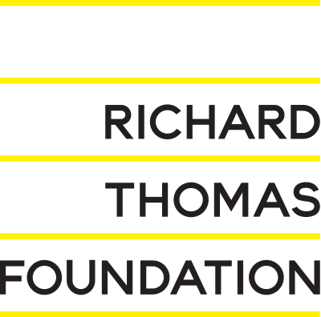

840: Five Year Anniversary – New Music for Voices and Strings
31 January 2020 at Café OTO
doors 7.30pm / music 8.00pm

840 celebrated its fifth birthday with a very special event at Café Oto. The acclaimed soprano Juliet Fraser performed alongside a string ensemble of cello trio (Colin Alexander, Stephanie Tress and Peteris Sokolovskis) and viola (Francesca Gilbert), as well as vocalists Sara Rodrigues and Rodrigo B. Camacho of the New Maker Ensemble.
At the heart of the evening were two high-profile new commissions from composers Laurence Crane and John Lely, both of whom are long-term friends of the series and whose music has featured frequently at 840 throughout the years.
The rest of the programme consisted of a selection from the many pieces that have been written especially for 840’s concerts. Luxuriant, striking and surprising works by composers Georgia Rodgers, Sergei Zagny, Jonathan Cole, Nicholas Peters and Marc Sabat featured alongside brand-new works by 840 curators, Alex Nikiporenko and James Luff. There was also be a module from composer Cassandra Miller and Juliet Fraser’s astonishing ongoing collaboration Tracery.
This concert has been made possible with generous support from
Arts Council England, The Richard Thomas Foundation, The Hinrichsen Foundation and The RVW Trust.
 |
 |  |
 |
Click here for the programme